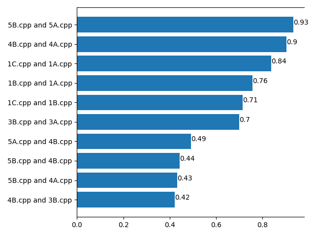

<div *ngIf="messengerService.getMessage()=='';else loggedIn">
    <div class="container">
        You are not logged in.

        Click <a routerLink="/login" style="color:red">here</a> to log in and <a routerLink="/signup"
            style="color:red">here</a> to register.
    </div>
</div>
<ng-template #loggedIn>
    
    <h1>Results</h1>
<hr>
<h3>1) Overview</h3>
The pairs of files with the most similarity are: <br>

<li *ngFor="let i of rep;">
    {{files[i]}} :- {{values[i]}}
</li>

Here's a graph visualizing the data.



<!--Add two drop down lists here to display similarity between any two files-->

<form [formGroup]="form" (ngSubmit)="submit()">

    <div class="form-group">
        <label for="file1">Choose first file:</label>
        <select formControlName="file1" class="form-control">
            <option disabled>Select file</option>
            <option>Choose File</option>
            <option *ngFor="let file of all_files">{{file}}</option>
        </select>
    </div>
    <div class="form-group">
        <label for="file2">Choose second file:</label>
        <select formControlName="file2" class="form-control">
            <option disabled>Select file</option>
            <option>Choose File</option>
            <option *ngFor="let file of all_files">{{file}}</option>
        </select>
    </div>

    <button class="btn btn-primary" on_click="submit()">Submit</button>
</form>

<div *ngIf="show;">
    {{show_val}}
</div>

</ng-template>